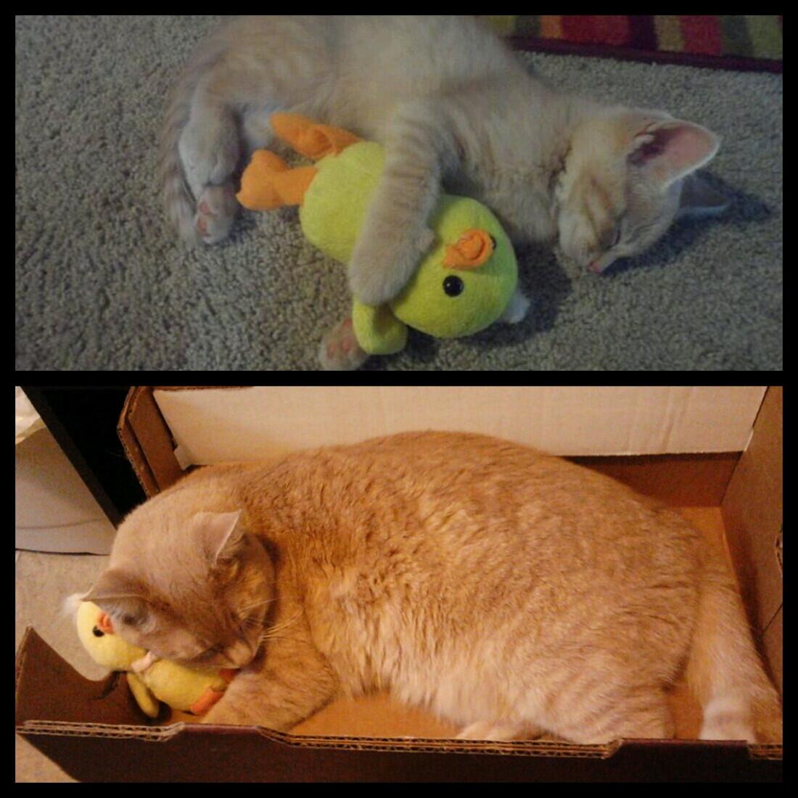

Twitterarkiv för @ihindha
Chris Leonardsson
Anm: Det ända som ändrats är min gamla urlkortare tagits bort och orginal länkar lagts till i görligaste mån. Om jag inte kunnat återskapa länken, är den markerad med Död länk
2012
Augusti
NHW.se - Blogg: Är Apples storhetstid över? Död länk
Vilka städer hade skrån?
Död länk
Låter även som en ganska passande beskrivning av Ihinða... (Äktenskap, barn och sex i Trakonien. http://erik-granstrom.blogspot.se/2012/07/aktenskap-barn-och-sex-i-trakorien.html)
En flodstad med ett par broar på vilka många byggnader på. [gemf. medeltida london]
Såg för ett tag sedan på ett avsnitt av mythbusters där de bevisade att de gamla grekerna mycket väl kan ha skapat en automatiskt armborst.
Hur digitalarkivera? Sätta upp en ny mediawiki? Ammat progarm?
Behöver ett bra namn på min blogg...
Ihinðatankar: Nytt namn: Död länk
Ihinðatankar: Liten språkhistoria ...: Död länk
RT @IDGse: Android stärker greppet om mobilerna http://bit.ly/QOVanj
RT @IDGse: Jättetest: Nexus 7 bryter helt ny mark http://bit.ly/O6FoCN
RT @xdadevelopers: Android: AppSync Moves Apps Between Devices on a Local Network http://bit.ly/MUTQt3
Intressanta översättningstankar ... (Tankar från Trakorien: Traxorien https://erik-granstrom.blogspot.com/2012/08/traxorien.html)
Ihinðatankar (uppdaterat): Plattformsbyte ...
Gräsklippning och sol... En tröttande kombination.
RT @elib_se: Debatt: Sänk momsen på ljud- och e-böcker - nt.se http://nt.se/debatt/default.aspx?articleid=7865537 #ebok #bocker
Då var elden släkt...
Jag gillar The Who...
RT @firefox: Dos and don't for creating a good password: http://mzl.la/R0oiGd
RT @svtnyheter: Facebook misstänks bryta mot lagen http://www.svt.se/nyheter/varlden/facebook-misstanks-bryta-mot-lagen #svt
RT @TechnoBuffalo: Google Voice Search for Android Now Supports 13 Additional Languages http://ow.ly/1m12t5
Sex punkter varför historia är viktigt ... Död länk
September
Skulle alldrig köpa någon kindle produkt, även om jag kunde. En läsprodukt utan epub - nej tack.
Om ölbryggnad på medeltiden Död länk
Man kan ju alltid hoppas ... Död länk
Harrison om Birger Jarl och myntslagning Död länk
RT @DailyDeity: Laka: The Hawaiian goddess of the wildwood, nature, and rainstorms. She was the patroness of the Hula-dancers. (Polynesian)
RT @DailyDeity: Enyalius: A minor Spartan god of war and attendant of Ares. It is also a title of Ares himself. (Greek)
Harrison om Rolandssången. Död länk
RT @DailyCreature: Bwgwl: A spirit in Welsh folklore that inspires terror.
RT @DailyCreature: tovenaar: The Dutch word for magician. (Folklore)
RT @DailyDeity: Inari: The rice or harvest god. Inari is nowadays regarded as the god of prosperity. (Japanese)
RT @adlibris_com: Vi håller med! RT @LinaKalmteg: "E-boken är inget problem! Bara nytt format!" Bra Dorotea Bromberg! #bokmassan
RT @DailyCreature: Divé zeny: 'Wild woman.' A female forest spirit in Bohemian folklore.
Oktober
RT @DailyCreature: Eilean na hÒige: The Scottish Gaelic name for Tír na nÓg. Recently it may also refer to the island of Eriskay.
RT @DailyCreature: Snallygaster: In the South Mountain region (United States), a monstrous bird preying on young children. (Native American)
Harrison om tempelriddarnas undergång. Död länk
November
gReader - Best Google Reader app for Android. http://greader.co
RT @DailyCreature: Rahkoi: The ghost of the Finns and the Saami. It has influence on the phases of the moon. (Finno-Ugric)
TkJ: RetroUI, program som ersätter Metro i Windows 8. Död länk
RT @IDGse: Chrome har knuffat Explorer från tronen http://bit.ly/Tslpw4
December
RT @DailyCreature: ogre: In fairy tales, a man-eating monster, larger than a man yet shorter than a giant. (Folklore)
Testar Falcon Pro
RT @DailyCreature: Gwragedd Annwn: Welsh water-spirits, inhabiting lakes and streams. These lovely creatures often marry mortals and liv ...
RT @KULTURNYHETERNA: First Aid Kit har gjort årets tionde bästa låt (enligt amerikansk tidning): http://www.svt.se/kultur/musik/first-aid-kit-har-gjort-arets-tionde-basta-lat #svt
RT @DailyCreature: Dobharchú: The 'king' of all the lakes and father of all otters, according to Irish folklore.
Viktigt Apple-patent ogiltigförklarats idg.se Död länk
RT @DailyDeity: Gotha: A Lithu-Prussian deity of the propagation of cattle. (Baltic)
2013
Januari
RT @DailyCreature: Äbädä: A forest spirit in Tatar folklore who resembles and old woman. She is generally believed to be harmless. (Turkic)
RT @DailyDeity: Ningyu Lawa: The god of food and of the kitchen. He is one of the sons of Ningsan Woishun and Phungkam Janun. (Burmese)
RT @DailyCreature: ubagabi: According to legend, an old woman once stole oil. The gods punished her by pouring oil on her hair and setti ...
RT @RFSU: Katarina Wennstam: "Genom att uppmana kvinnor att passa sig säger vi att våldtäkt är kvinnors fel. Men det är män måste sluta ...
RT @DailyCreature: Harun: Harun and Haruna are Moroccan water spirits who can assume the form of snakes.
Harrison om ättesamhälle - http://urkort.se/1q
RT @NightsCrusades: You've had your way a long, long time; you kings and tyrants. What ails you that do not tread the path of honour? ~ ...
RT @DailyCreature: Oreande la Fée: A benevolent fairy from fifteenth-century European legend and romance. (Other)
RT @LibrisSverige: "Jag kan aldrig få en kopp te som är för stor eller en bok som är för tjock"
- C.S. Lewis
Februari
RT @DailyDeity: Mompaidu: A god of the atmosphere, of clouds. (Philippine)
RT @DailyCreature: Schachtmandl: In German folklore, the guardian-spirit of the mines. (Germanic)
RT @SvDKultur: "Skelettfyndet kan återupprätta Rikard III:s rykte". Dick Harrison om en av Englands mest omstridda kungar. http://t.co/K ...
Var kan man se digerdödens framfart på gårdarna? | Historiebloggen | SvD - http://urkort.se/1v
Så får du en startknapp i Windows 8 - gratis - http:// http://urkort.se/1w
Tankar från Trakorien: Att gripa till svärd och dö av svärd - http://urkort.se/1x
Var Albrekt en dålig kung? | Historiebloggen | SvD - http://urkort.se/1y
Danagäld | Historiebloggen | SvD - http://urkort.se/1z
Påvarna och Petri nyckelmakt | Historiebloggen | SvD - http://urkort.se/20
Har precis uppdaterat min nexus 7 till ver. 4.2.2 - http://urkort.se/21
RT @DailyCreature: fairy cat: Large supernatural cats in British folklore.
Var vilar Maria Magdalena? | Historiebloggen | SvD - http://urkort.se/24
Mars
Den medeltida borgen på Visingsö | Historiebloggen | SvD - http://urkort.se/26
Latinska riken i det medeltida Grekland | Historiebloggen | SvD - http://urkort.se/27
RT @swedroid: Alla bakgrundsbilder från HTC One och Sense 5 [Notis] http://p.ost.im/p/dHwsFC
Hur splittrat var egentligen Tyskland? | Historiebloggen | SvD - http://urkort.se/28
Växjö biskopsdöme | Historiebloggen | SvD - http://urkort.se/2a
Google vårstädar – lägger ner populära RSS-tjänsten Reader | Swedroid - http://urkort.se/2b
RT @DailyCreature: luideag: A murderous female demon of Scottish Gaelic oral tradition. It haunted several pools on the Isle of Skye.
Ny Dropbox-klient | Feber / Webb - http://urkort.se/2f - Var är linux version?
RT @DailyCreature: Friar Rush: A strolling spirit who once gained admittance into a monastery as a scullion and played various pranks on ...
Ett dalsländskt helgon? | Historiebloggen | SvD - http://urkort.se/2g
Test
Tankar från Trakorien: Veckodagarna - http://urkort.se/2h
April
RT @DailyDeity: Hinokbon: A god who is invoked in cases of wounds, broken bones, dislocations, and snakebite. (Philippine)
RT @DailyCreature: síabair: A large, malicious fairy in Irish folklore. A síabair was said to have tried to choke the pagan Cormac mac Airt…
Landskronas födelsedag | Historiebloggen | SvD - http://urkort.se/2j
Varför ett bondestånd? | Historiebloggen | SvD - http://urkort.se/2k
Kung Krösus | Historiebloggen | SvD - http://urkort.se/2l
Hur lång tid tog det att bygga fästningarna? | Historiebloggen | SvD - http://urkort.se/2m
Tiggarkungen? | Historiebloggen | SvD - http://urkort.se/2n
Hur spreds pesten? | Historiebloggen | SvD - http://urkort.se/2o
Skatteväsendets undergång | Historiebloggen | SvD - http://urkort.se/2p
Maj
RT @DailyCreature: Zitna-atka: A spirit who walks among the cornfields at noon, and kills anyone who cannot answer her riddles. (Slavic)
Trosas ålder | Historiebloggen | SvD - http://urkort.se/2q
Skänninge möte | Historiebloggen | SvD - http://urkort.se/2r
Besegrades romarna av anglosaxarna? | Historiebloggen | SvD - http://urkort.se/2s
Harriet Tubman | Historiebloggen | SvD - http://urkort.se/2t
RT @DailyCreature: Hobande, Lady: A character from French popular belief who visits people's houses by night bringing prosperity.
RT @CarinaBurman: Lockande! Historien sedd gm bl.a. den vackra dalkullan (som f.ö. porträtterades av Fredrika Bremer). http://t.co/oPJEH4Tp…
RT @DailyCreature: Hatif: In Arab superstition, a spirit that is heard but not seen. It may give advice, direction, or warning. (Arabian)
Google integrerar Gmail med Drive | Feber / Webb - http://urkort.se/2u
Irlands guldålder | Historiebloggen | SvD - http://urkort.se/2v
RT @DailyCreature: mermecolion: A legendary hybrid creature found in medieval bestiaries. The mermecolion has the head of a lion and the bo…
RT @aliciadickner: De vi kallar kvinnohatare tror inte heller att män kan vara något bättre. Det är inte feministerna som hatar män, det är…
The Logistics of Minas Tirith | The Dream Forge - http://urkort.se/2w
RT @DailyCreature: Iubdan: The king of the Leprechauns in Irish folklore and legend. He is mentioned in a fifteenth-century manuscript.
Vad är en furste? | Historiebloggen | SvD - http://urkort.se/2x
RT @DailyCreature: Blue-cap: A mine spirit in British folklore prior to the mid-nineteenth century. He assisted miners in their work.
RT @DailyDeity: dGra lha: Deities who are believed to be capable of protecting their worshipers against enemies. (Tibetan)
RT @culturalcat: "When I play with my cat, how do I know that she is not playing with me rather than I with her" -Michel de Montaigne. http…
När den belägrade blir belägrad | Historiebloggen | SvD - http://urkort.se/2y
Sveriges enda stavkyrka | Historiebloggen | SvD - http://urkort.se/2z
Gräsänka och gräsänkling? — Lotten - http://urkort.se/30
The Logistics of Minas Tirith | The Dream Forge - http://urkort.se/2w
Juni
I've just personalized @SwiftKey for Android with my Twitter posts! Get it free at http://www.swiftkey.net
Dela SwiftKey Tablet - SwiftKey Tablet har sparat mig 10,000 tangenttryckningar! Kolla in den här: http://swiftkey.net
Maktkampen i Sverige på 1100-talet | Historiebloggen | SvD - http://urkort.se/31
RT @DailyCreature: Serosevsky: A Russian spirit of the forest who leads travelers astray. It may appear as a human being or as an animal.
Namnet Ladulås | Historiebloggen | SvD - http://urkort.se/32
RT @aliciadickner: "Judge a man not by how he treats his equals but by how he treats his inferiors" - Sirius Black. Hur dömer ni Fredrik Re…
RT @DailyCreature: Alte: 'Old One.' A Teutonic field-spirit who appears in human form.
RT @DailyDeity: Aathaney: A nature deity of the Rai (Khambu) of Nepal, invoked for good cultivation and harvest, rain, and better health an…
RT @Biblioteksblade: Öppet brev om e-böcker http://biblioteksbladet.se/2013/06/20/oppet-brev-om-e-bocker/
Ten years of supporting free knowledge — Wikimedia blog - http://urkort.se/36
Läsp och halt? | Historiebloggen | SvD - http://urkort.se/37
En av många bortglömda drottningar | Historiebloggen | SvD - http://urkort.se/38
En hjältedikt | Historiebloggen | SvD - http://urkort.se/39
Kvinnliga kejsare i Kina? | Historiebloggen | SvD - http://urkort.se/3a
Juli
RT @NightsCrusades: To each brother we grant one squire, and if he serves charity, the brother should not beat him for any sin ~ Rules of t…
RT @NightsCrusades: Do not come against me, do not live by my magic; may I not have to tell this name of yours to the Great God who sent yo…
Hur länge har germaner bott i Sverige? | Historiebloggen | SvD - http://urkort.se/3b
Kungaborg eller biskopsborg? | Historiebloggen | SvD - http://urkort.se/3c
Källkritiken och sagokungarna | Historiebloggen | SvD - http://urkort.se/3d
RT @UberFacts: Hohenzollern Castle, Germany
RT @NightsCrusades: The felled knight smote all who passed. A blow wounded Jum'ah's forehead, leaving it open like the mouth of a fish ~ Ib…
RT @aliciadickner: Jag vill inte SE apoteket göra reklam för hårvårdsprodukter I TV. Jag vill se apoteket GARANTERA ATT ALLA FÅR DEN MEDICI…
Källkritiken och sagokungarna | Historiebloggen | SvD - http://urkort.se/3d
I just signed up for @CopyApp and got 15 GB free online storage! #tweetFor2GBMore
http://copy.com/?s=twitter.usr.tour
Sign up for @copyapp with this link, and we'll both get 5 GB of free cloud storage in addition to the usual 15 GB: https://copy.com?r=WVVERr
Varför ligger Ängelholm inte vid havet? | Historiebloggen | SvD - http://urkort.se/3j
Google Play Böcker kommer till Sverige – vi har fått en bokbutik | Swedroid | Nordens största Android-community - http://urkort.se/3k
Vem var drottning Filippa? | Historiebloggen | SvD - http://urkort.se/3l
RT @Creutz: Torget i #Borås från ovan, år 1932.
Media Storage: Copy Vs. Google Drive - LockerGnome - http://urkort.se/3m
Nu finns Google Play Böcker i Sverige - Allt om Android - http://urkort.se/3n
Falcon Pro v2.0.5 update brings offline improvements - Android Community - http://urkort.se/3o
SwiftKey Cloud beta launched with sync, backup and trending phrases | Android Central - http://urkort.se/3q
RT @SwiftKey: Try the new SwiftKey Cloud features in our latest beta - download free now: http://beta.swiftkey.net
New Nexus 7 specs | Android Central - http://urkort.se/3t
Nyheterna i Android 4.3 – börjar skickas ut till Nexus-enheter redan idag | Swedroid - http://urkort.se/3u
En miljon appar och 50 miljarder nedladdningar i Play Store [Statistik] | Swedroid - http://urkort.se/3v
Nexus 7 - Googles nya mini-messias - IDG.se - http://urkort.se/3w
Därför la man ner Google Reader: Internpolitik | TkJ.se- http://urkort.se/3x
”Jag har upptäckt fördelarna med att läsa e-böcker” | Svensk Bokhandel - http://urkort.se/3y
Kungar i Wales | Historiebloggen | SvD - http://urkort.se/3z
Tankar från Trakorien: Tjuv! - http://urkort.se/40
The Stone Age: the Neolithic Period | History in an HourHistory in an Hour - http://urkort.se/42
RT @LoveMeowdotcom: 18 months later and kitty still sleeps with his duck toy: http://po.st/pgLQfs

Augusti
Ett korståg från Sunnmöre | Historiebloggen | SvD - http://urkort.se/44
RT @NightsCrusades: Not a day passed without death. Both sides grew tired. They would sing together at times, but then they would revert to…
RT @ankiahlin: En smula hänsyn och lite omtanke betyder så mycket.
Nalle Puh.
Sagan om sagorna: Medan jag är upptagen på annat håll... - http://urkort.se/45 - Underbart...
RT @ankiahlin: Människor som inte tänker ordentligt har inga hjärnor, snarare har de grått ludd som flugit in i huvudet på dem av misstag.
…
Apple pressas efter domstolsförlust | Svensk Bokhandel - http://urkort.se/46
RT @fabsh: Fox News
Nova Launcher update brings new custom docks, scroll effects and more - Android Community - http://urkort.se/47
Ljus på medeltiden | Historiebloggen | SvD - http://urkort.se/48
OS X apps run on Linux with Wine-like emulator for Mac software | Ars Technica - http://urkort.se/49
New Nexus 7 Factory Images Not Available; JBQ Leaves AOSP - xde- developers | http://urkort.se/4a
One World to Rule Them All: The Six Pillars of Middle Earth (Part 1 of 2) | http://Tor.com - http://urkort.se/4c
RT @NightsCrusades: None have escaped the Old Man of the Sea but thou, and those who die under him he eateth. So praise Allah for thy safet…
Fostre och fostra | Historiebloggen | SvD - http://urkort.se/4d
RT @sinoes: Tycker vi ska sluta snacka om valfrihet och börja snacka om valtvång.
SwiftKey Cloud Beta Update - http://urkort.se/4e
Bryten, då? | Historiebloggen | SvD - http://urkort.se/4f
RT @HourlyCats: HourlyCats presents:
RT @ankiahlin: Fastän det är förfärligt gott att äta honung, så finns det ett ögonblick alldeles innan man börjar äta den, som är nästan än…
September
Peterspenningen | Historiebloggen | SvD - http://urkort.se/4h
RT @elib_se: Endast Eböcker ...: Moms på eböcker http://endastebocker.blogspot.com/2013/09/moms-pa-ebocker.html?spref=tw #ebok
Test
Oktober
Hjo | Historiebloggen | SvD - http://urkort.se/4k
RT @HourlyCats: HourlyCats presents:
RT @HourlyCats: HourlyCats presents:
Skuggornas bibliotek: Trailerfredag - http://urkort.se/4l
Those new Kindle tablets would be awesome if they ran stock Android | Pocketnow - http://urkort.se/4m
Tankar från Trakorien: Sisyfos tempel - http://urkort.se/4n
Bandstationernas konung - IDG.se - http://urkort.se/4o
Har Skåne tillhört Tyskland? | Historiebloggen | SvD - http://urkort.se/4p
E-Book Watermarking Gains Traction in Europe | Copyright and Technology - http://urkort.se/4q
Gästinlägg Mårten Sandén: Öppet brev till män som inte läser « Bokhora - http://urkort.se/4r
Endast Eböcker ...: Amazon och ebokhandlare i Sverige - http://urkort.se/4s
RT @HourlyCats: HourlyCats presents:
Jobbar Apple med en Ipad Pro? - Mobil.se - http://urkort.se/4u
Aviate Launcher promises simplicity and intelligence, currently sits in private beta - Android Community - http://urkort.se/4v
Google Play Books Updated With Better Support For Scanned Books - The Digital Reader - http://urkort.se/4w
December
Från Östra Aros till Uppsala (via @Pocket) http://urkort.se/4x